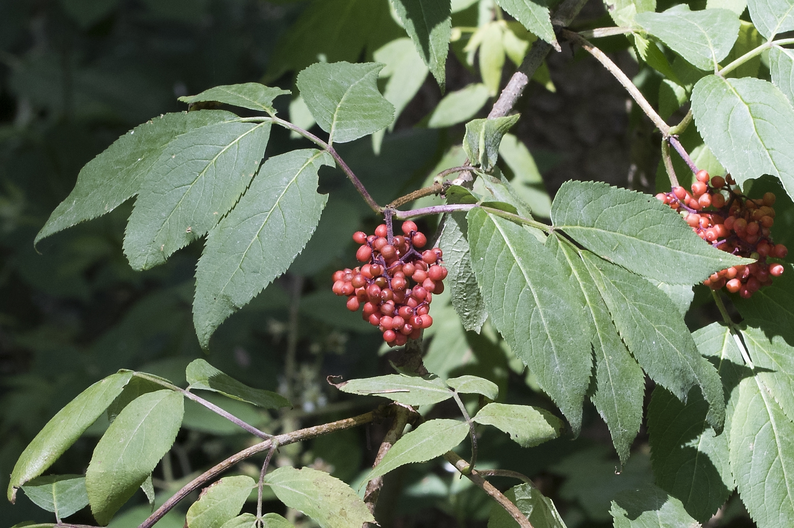
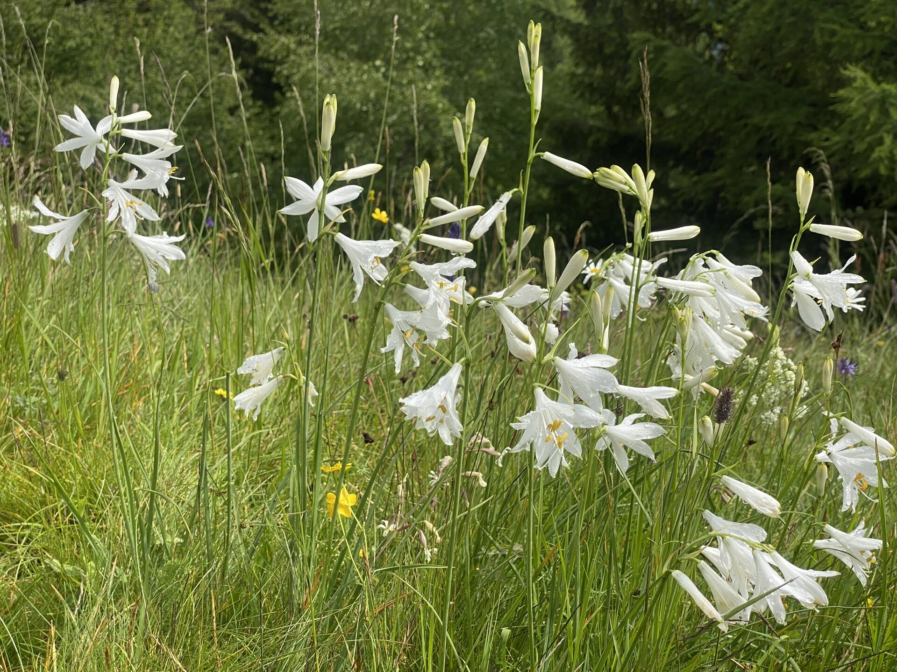
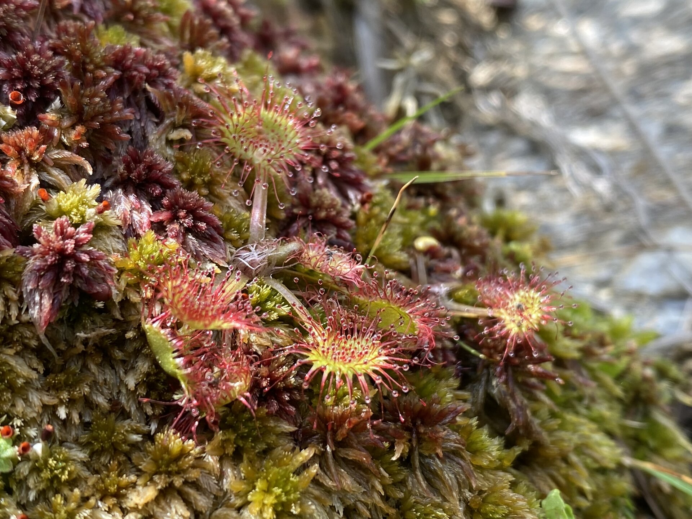
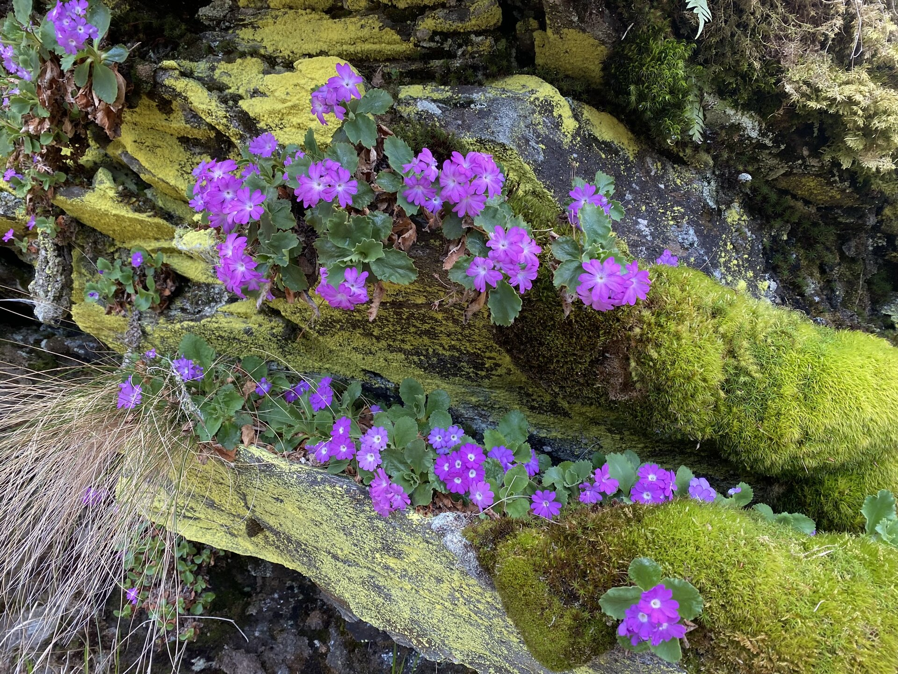

3 Gefässpflanzen
3.1 Einleitung Gefässpflanzen
Über 418 Gefässpflanzenarten – Blumen, Kräuter, Gräser, Bäume, Sträucher und Farne – wachsen in Ces. Besonders artenreich sind die Magerwiesen, und viele seltene Arten wachsen in den Mooren. Die grösste Blütenpracht kann man im Juni erleben. Der Grund für diese farbige Artenvielfalt sind die Menschen, welche seit vielen Generationen in Ces Landwirtschaft betreiben und die Landschaft offenhalten. Ohne sie wäre die Ebene von Ces ein eintöniger Fichtenwald.
3.2 Roter Holunder

Der Rote Holunder wächst bevorzugt zwischen Steinen. So ist es kein Zufall, dass im Dorfkern von Ces über 20 Exemplare dieses Strauchs auf Trockensteinmauern, Ruinen und Steinhaufen ihr Zuhause gefunden haben. Aus den Früchten kann man Gelee herstellen.
3.3 Paradieslilie

Im Juni blüht die Paradieslilie in den Magerwiesen.
3.4 Sonnentau

Mit etwas Glück entdeckt man auf den Fusswegen in den Mooren von Verengo den winzigen Rundblättrigen Sonnentau. Mit seinen klebrigen Tentakeln fängt und verdaut er kleine Insekten. So kann er im nährstoffarmen Hochmoor überleben.
3.5 Felsenprimel

Ende April sind die Felsen beim Wasserfall mit der Roten Felsenprimel dekoriert.
3.6 Fundmeldungen
3.7 Artenliste
Abies alba (LC), Acer pseudoplatanus (LC), Achillea macrophylla (LC), Achillea millefolium aggr. (LC), Achillea millefolium (LC), Acinos alpinus (LC), Aconitum lycoctonum subsp. neapolitanum (LC), Aconitum lycoctonum subsp. vulparia (LC), Aconitum lycoctonum (LC), Actaea spicata (LC), Adenostyles alliariae (LC), Aegopodium podagraria (LC), Agrostis capillaris (LC), Agrostis stolonifera (LC), Ajuga pyramidalis x reptans, Ajuga pyramidalis (LC), Ajuga reptans (LC), Alcea rosea, Alchemilla alpina aggr. (NE), Alchemilla alpina (NE), Alchemilla cf. glabra aggr., Alchemilla coriacea aggr. (NE), Alchemilla coriacea (NE), Alchemilla decumbens aggr. (NE), Alchemilla hybrida aggr. (NE), Alchemilla vulgaris aggr. (NE), Alchemilla xanthochlora (NE), Allchemilla vulgaris, Alliaria petiolata (LC), Allium lusitanicum (LC), Alnus viridis (DD), Alopecurus pratensis (LC), Amelanchier ovalis (LC), Anemone nemorosa (LC), Angelica sylvestris (LC), Antennaria dioica (LC), Anthemis tinctoria (NE), Anthericum liliago (LC), Anthoxanthum odoratum aggr. (LC), Anthoxanthum odoratum (LC), Arabidopsis thaliana (LC), Arabis ciliata (LC), Arctium minus subsp. minus (NE), Arctium minus (LC), Arnica montana (LC), Arrhenatherum elatius (LC), Aruncus dioicus (LC), Asplenium septentrionale (LC), Asplenium trichomanes (LC), Asplenium viride (LC), Aster bellidiastrum (LC), Astragalus glycyphyllos (LC), Astrantia minor (LC), Athyrium distentifolium (LC), Athyrium filix-femina (LC), Avenella flexuosa (LC), Bellis perennis (LC), Berberis vulgaris (LC), Betula pendula (LC), Biscutella laevigata (LC), Blechnum spicant (LC), Borago officinalis, Botrychium lunaria (LC), Brachypodium pinnatum aggr. (LC), Brachypodium pinnatum (DD), Brachypodium rupestre (LC), Briza media (LC), Calamagrostis villosa (LC), Calendula arvensis, Calendula officinalis, Calluna vulgaris (LC), Campanula barbata (LC), Campanula rotundifolia (LC), Campanula scheuchzeri (LC), Capsella bursa-pastoris (LC), Cardamine amara (LC), Cardamine resedifolia (LC), Carduus defloratus subsp. crassifolius (NT), Carduus defloratus subsp. defloratus (LC), Carduus defloratus (LC), Carex canescens (NT), Carex caryophyllea (LC), Carex demissa (NT), Carex echinata (LC), Carex flacca (LC), Carex flava (LC), Carex lepidocarpa (NT), Carex leporina (LC), Carex montana (LC), Carex nigra (LC), Carex ornithopoda (LC), Carex pairae (LC), Carex pallescens (LC), Carex panicea (LC), Carex pauciflora (NT), Carex paupercula (NT), Carex pilulifera (LC), Carex sempervirens (LC), Carlina acaulis (LC), Carum carvi (LC), Castanea sativa (LC), Centaurea cyanus (CR(PE)), Centaurea montana, Centaurea nigrescens (LC), Cerastium arvense subsp. strictum (LC), Cerastium arvense (LC), Cerastium fontanum subsp. vulgare (LC), Cerastium fontanum (LC), Chaerophyllum hirsutum (LC), Chaerophyllum villarsii (LC), Chenopodium album (LC), Chenopodium bonus-henricus (LC), Chrysosplenium alternifolium (LC), Cicerbita alpina (LC), Circaea alpina (LC), Cirsium helenioides (LC), Cirsium palustre (LC), Cirsium vulgare (LC), Clinopodium vulgare (LC), Convallaria majalis (LC), Corylus avellana (LC), Crataegus monogyna (LC), Crepis aurea (LC), Crepis conyzifolia (LC), Crepis paludosa (LC), Crocus albiflorus (LC), Cryptogramma crispa (LC), Cuscuta epithymum (LC), Cuscuta europaea (NT), Cynosurus cristatus (LC), Cystopteris alpina (LC), Cystopteris fragilis aggr., Cystopteris fragilis (LC), Dactylis glomerata (LC), Dactylorhiza maculata subsp. fuchsii (LC), Dactylorhiza maculata (LC), Danthonia decumbens (LC), Deschampsia cespitosa (LC), Dianthus carthusianorum (LC), Drosera rotundifolia (NT), Dryopteris affinis subsp. cambrensis, Dryopteris affinis (LC), Dryopteris expansa (LC), Dryopteris filix-mas (LC), Eleocharis quinqueflora (LC), Elymus caninus (LC), Elymus repens (LC), Epilobium angustifolium (LC), Epilobium collinum (LC), Epilobium montanum (LC), Epilobium palustre (LC), Epilobium sp., Equisetum arvense (LC), Equisetum sylvaticum (LC), Eriophorum angustifolium (LC), Eriophorum vaginatum (NT), Euphrasia rostkoviana aggr., Euphrasia rostkoviana subsp. rostkoviana (NE), Fallopia convolvulus (LC), Festuca acuminata (LC), Festuca arundinacea (LC), Festuca cf. arundinacea, Festuca cf. ovina aggr., Festuca filiformis (LC), Festuca ovina (DD), Festuca pallens (DD), Festuca rubra aggr. (LC), Festuca varia aggr. (LC), Fragaria vesca (LC), Fragaria viridis (NT), Fraxinus excelsior (LC), Galeopsis pubescens (NT), Galeopsis tetrahit (LC), Galinsoga quadriradiata, Galium mollugo aggr. (LC), Galium mollugo (LC), Galium pumilum (LC), Galium rubrum aggr., Galium rubrum (LC), Galium ×centroniae, Genista germanica (LC), Gentiana acaulis (LC), Gentiana purpurea (LC), Gentiana ramosa (LC), Geranium pyrenaicum (LC), Geranium robertianum subsp. robertianum (LC), Geranium robertianum (LC), Geranium sylvaticum (LC), Geum montanum (LC), Geum urbanum (LC), Gnaphalium supinum (LC), Gnaphalium sylvaticum (LC), Gnaphalium uliginosum (VU), Gymnadenia conopsea (LC), Gymnocarpium dryopteris (LC), Helianthemum nummularium subsp. grandiflorum (LC), Helianthemum nummularium subsp. nummularium (NT), Helianthemum nummularium (LC), Helianthus tuberosus, Heracleum sphondylium (LC), Hieracium hoppeanum (LC), Hieracium lactucella (LC), Hieracium murorum aggr. (LC), Hieracium pilosella (LC), Hippocrepis comosa (LC), Holcus lanatus (LC), Holcus mollis (LC), Homogyne alpina (LC), Huperzia selago (LC), Hypericum maculatum subsp. maculatum (LC), Hypericum maculatum (LC), Hypericum perforatum subsp. perforatum (LC), Hypericum perforatum (LC), Hypochaeris radicata (LC), Hypochaeris uniflora (LC), Impatiens noli-tangere (LC), Inula helenium, Juncus articulatus (LC), Juncus bufonius (LC), Juncus effusus (LC), Juncus filiformis (LC), Juniperus communis subsp. communis (LC), Juniperus communis (LC), Lamium album (LC), Lamium galeobdolon subsp. flavidum (LC), Lamium purpureum (LC), Larix decidua (LC), Laserpitium gaudinii (LC), Laserpitium halleri (LC), Lathyrus linifolius (LC), Lathyrus pratensis (LC), Leontodon autumnalis (LC), Leontodon helveticus (LC), Leontodon hispidus subsp. hispidus (LC), Leontodon hispidus (LC), Leucanthemum vulgare aggr. (LC), Leucanthemum vulgare (LC), Lilium bulbiferum subsp. croceum (NT), Lilium bulbiferum (NT), Lilium martagon (LC), Linaria vulgaris (LC), Lolium perenne (LC), Lonicera alpigena (LC), Lonicera nigra (LC), Lotus alpinus (LC), Lotus corniculatus aggr. (LC), Lotus corniculatus subsp. hirsutus, Lotus corniculatus (LC), Lupinus polyphyllus, Luzula campestris (LC), Luzula lutea (LC), Luzula multiflora aggr. (LC), Luzula multiflora (LC), Luzula nivea (LC), Luzula pilosa (LC), Luzula sylvatica (LC), Lycopodiella inundata (EN), Lycopodium annotinum (LC), Maianthemum bifolium (LC), Malva alcea (NT), Malva moschata (LC), Malva neglecta (LC), Melampyrum pratense (LC), Melampyrum sylvaticum (LC), Melica nutans (LC), Mentha ×piperita, Moehringia muscosa (LC), Moehringia trinervia (LC), Molinia arundinacea (LC), Molinia caerulea (LC), Molinia sp., Myosotis nemorosa (LC), Myosotis scorpioides aggr., Myosotis scorpioides (LC), Myosotis sylvatica aggr., Myosotis sylvatica (LC), Nardus stricta (LC), Nigella damascena, Orchis mascula (LC), Oreopteris limbosperma (LC), Origanum vulgare (LC), Oxalis acetosella (LC), Oxalis stricta, Paradisea liliastrum (LC), Parnassia palustris (LC), Pedicularis tuberosa (LC), Peucedanum ostruthium (LC), Phacelia tanacetifolia, Phegopteris connectilis (LC), Phleum alpinum (LC), Phleum rhaeticum (LC), Phyteuma betonicifolium (LC), Phyteuma hemisphaericum (LC), Phyteuma orbiculare (LC), Phyteuma scheuchzeri (LC), Picea abies (LC), Pimpinella major (LC), Pimpinella nigra (NT), Pimpinella saxifraga (LC), Pinguicula leptoceras (LC), Pinguicula vulgaris (NT), Plantago lanceolata (LC), Plantago major (LC), Platanthera bifolia (LC), Platanthera sp., Poa annua (LC), Poa chaixii (LC), Poa compressa (LC), Poa nemoralis (LC), Poa pratensis (LC), Poa supina (LC), Poa trivialis (LC), Poa variegata (LC), Polemonium caeruleum (NT), Polygala chamaebuxus (LC), Polygala vulgaris (LC), Polygonatum odoratum (LC), Polygonatum verticillatum (LC), Polygonum aviculare (NE), Polygonum persicaria (LC), Polypodium vulgare (LC), Polystichum braunii (NT), Populus tremula (LC), Potentilla argentea (LC), Potentilla aurea (LC), Potentilla erecta (LC), Potentilla verna (LC), Prenanthes purpurea (LC), Primula hirsuta (LC), Prunella grandiflora (LC), Prunella vulgaris (LC), Prunus avium (LC), Prunus serotina, Pseudolysimachion spicatum (NT), Pseudorchis albida (LC), Pteridium aquilinum (LC), Pulsatilla alpina subsp. apiifolia (LC), Quercus petraea (LC), Quercus robur (LC), Ranunculus aconitifolius (LC), Ranunculus acris subsp. acris (LC), Ranunculus acris subsp. friesianus (LC), Ranunculus acris (LC), Ranunculus bulbosus (LC), Ranunculus montanus (LC), Ranunculus platanifolius (LC), Ranunculus repens (LC), Ranunculus villarsii (LC), Rhinanthus alectorolophus (LC), Rhododendron ferrugineum (LC), Rhododendron ×intermedium, Rhynchospora alba (VU), Rosa canina aggr. (LC), Rosa canina (LC), Rosa cf. subcanina, Rosa corymbifera aggr., Rosa corymbifera (LC), Rosa dumalis (LC), Rosa pendulina (LC), Rosa sp., Rosa villosa (NT), Rubus idaeus (LC), Rubus saxatilis (LC), Rumex acetosa (LC), Rumex acetosella (LC), Rumex alpestris (LC), Rumex alpinus (LC), Rumex cf. alpestris, Rumex obtusifolius (LC), Rumex scutatus (LC), Sagina apetala subsp. apetala (NT), Sagina procumbens (LC), Salix caprea (LC), Salvia glutinosa (LC), Sambucus racemosa (LC), Saxifraga aspera (LC), Saxifraga cotyledon (LC), Saxifraga cuneifolia (LC), Saxifraga stellaris (LC), Scabiosa columbaria (LC), Scrophularia nodosa (LC), Sedum album (LC), Sedum alpestre (LC), Sedum annuum (LC), Sedum dasyphyllum (LC), Sedum sexangulare (LC), Selaginella selaginoides (LC), Sempervivum arachnoideum (LC), Sempervivum montanum (LC), Sempervivum tectorum (LC), Senecio ovatus (LC), Silene dioica (LC), Silene nutans (LC), Silene rupestris (LC), Silene vulgaris subsp. vulgaris (LC), Silene vulgaris (LC), Soldanella alpina (LC), Solidago virgaurea subsp. minuta (LC), Solidago virgaurea subsp. virgaurea (LC), Solidago virgaurea (LC), Sorbus aria (LC), Sorbus aucuparia (LC), Spergula arvensis (EN), Stachys officinalis (LC), Stellaria alsine (LC), Stellaria graminea (LC), Stellaria media (LC), Stellaria nemorum (LC), Streptopus amplexifolius (LC), Succisa pratensis (LC), Symphytum asperum, Symphytum officinale (NT), Tanacetum parthenium, Tanacetum vulgare (LC), Taraxacum officinale aggr. (LC), Thalictrum aquilegiifolium (LC), Thalictrum minus (LC), Thesium alpinum (LC), Thlaspi perfoliatum (LC), Thymus praecox subsp. polytrichus (LC), Thymus pulegioides subsp. pulegioides (LC), Thymus pulegioides, Thymus serpyllum aggr. (LC), Tilia cordata (LC), Tofieldia calyculata (LC), Tragopogon pratensis subsp. pratensis (VU), Tragopogon pratensis (LC), Trichophorum cespitosum subsp. cespitosum, Trichophorum cespitosum (LC), Trifolium alpestre (VU), Trifolium alpinum (LC), Trifolium aureum (NT), Trifolium montanum (LC), Trifolium pratense subsp. nivale (LC), Trifolium pratense (LC), Trifolium repens (LC), Trisetum flavescens (LC), Trollius europaeus (LC), Urtica dioica (LC), Vaccinium gaultherioides (LC), Vaccinium myrtillus (LC), Vaccinium uliginosum aggr. (LC), Vaccinium uliginosum, Vaccinium vitis-idaea (LC), Valeriana officinalis aggr. (LC), Valeriana tripteris (LC), Veratrum album subsp. lobelianum (LC), Veratrum album (LC), Veronica arvensis (LC), Veronica chamaedrys (LC), Veronica fruticans (LC), Veronica officinalis (LC), Veronica persica, Veronica serpyllifolia subsp. humifusa (NT), Veronica serpyllifolia subsp. serpyllifolia (LC), Veronica serpyllifolia (LC), Veronica urticifolia (LC), Vicia cracca subsp. cracca (LC), Vicia cracca (LC), Vicia sepium (LC), Vincetoxicum hirundinaria (LC), Viola arvensis (LC), Viola biflora (LC), Viola canina (NT), Viola cf. thomasiana, Viola palustris (LC), Viola reichenbachiana (LC), Viola thomasiana (LC), Viola tricolor subsp. subalpina (LC), Viola tricolor, cf. Epilobium sp.